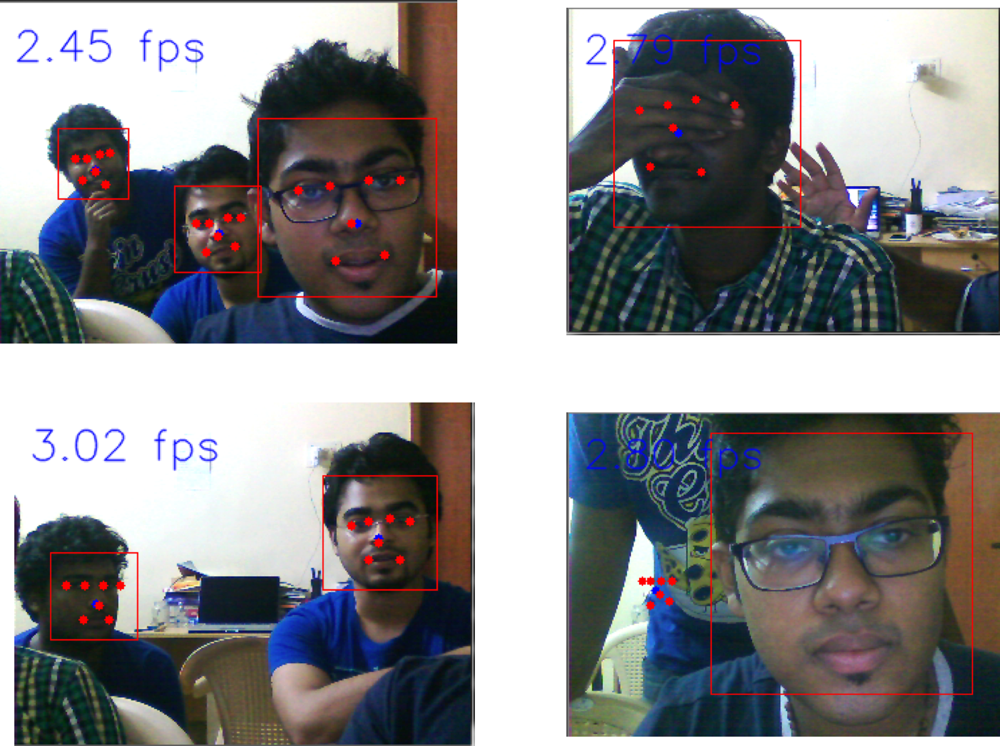
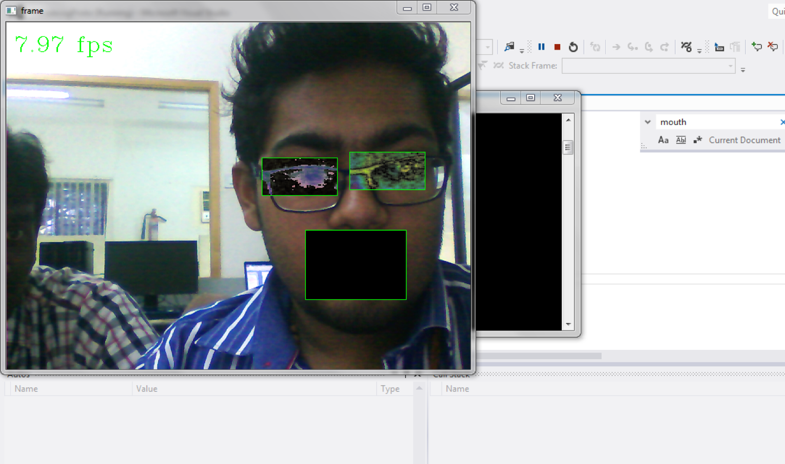

Facial Feature Recognition
DPM + DSIFT Hybrid
Overview
This project was part of an overall video analytics research project between the Bhaba Atomic Research Centre, Mumbaiand the AU-KBC research centre at the Madras Institute of Technology. My research group was in charge of the face recognition system. This was built over a period of approximately 8 months.
Normal face recognition systems are vulnerable to changes in lighting and pose. We decided to combine the strengths of two models, the Dense Scale Invariant Transform (DSIFT) and the Deformable Parts Model (DPM). Using the strengths of both these models improved recognition robustness in low light conditions, and upto a 30 degree tilt in head pose.
The project was a collaborative effort between two other undergraduate researchers, a postgraduate guide, a professor who was our research guide, and a research representative from BARC, Mumbai.
Since this was an undergraduate research project, the thesis proposal and development was carried out by my peers and I, with the senior memebers of the team playing a guiding role.
The source code is of two parts, one trains the system and the other is the one deployed to recognize faces.
Project PaperHow it works
Faces in a frame are first detected using the Viola-Jones framework. Once that's done, we use the Deofrmable Parts Model to extract regions of interest (ROIs) - the eyes, mouth and nose.

After isolating the regions of interest, we run a pass with the Dense SIFT algortithm and extract the descriptors. D-SIFT models usually use a Gaussian wavelet. We replaced this with a Gabor wavelet due to its robustness with changes in lighting.
Descriptors are then sent into a classifier that analyzes the descriptor information, compares it with trained values, and then recognizes the faces in a frame

Challenges
A significant challenge we had was tweaking and testing different Gabor wavelet types. It took a lot of time to test different values and settle on one that was accurate under different lighting and pose conditions.
Another challenge we had was finding a good database that contained images of faces under different lighting conditions. We eventually made our own, with the help of other students. Shots were taken under varying lighting conditions and different head poses. This wasn't as large of a database as we would have wanted, but it did give us insight into how a similar training set should be built.
Next steps
Accuracy:
Accuracy was a major issue when implementing this system. This was meant for security systems, so using a good camera goes a long way into maintaining good accuracy.
Something else we realized was that even though the system was more robust against changes in lighting and pose, it still wasn;t as accurate as other mainstream systems. A few way we thought of improving this was by increasing the number of descriptors in the ROI, and testing with calculating descriptors for the whole facial region.
Replace SVM:
The support vector machine was used for the purposes of testing the system, this definitely needs to be replaced with something more robust and scalable such as a Convolutional Neural Network.
Writing this now, it feels stupid that we didn't implement a CNN earlier, instead of using an SVM.